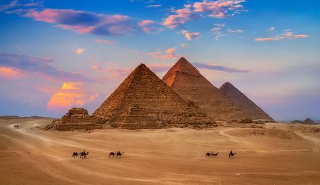
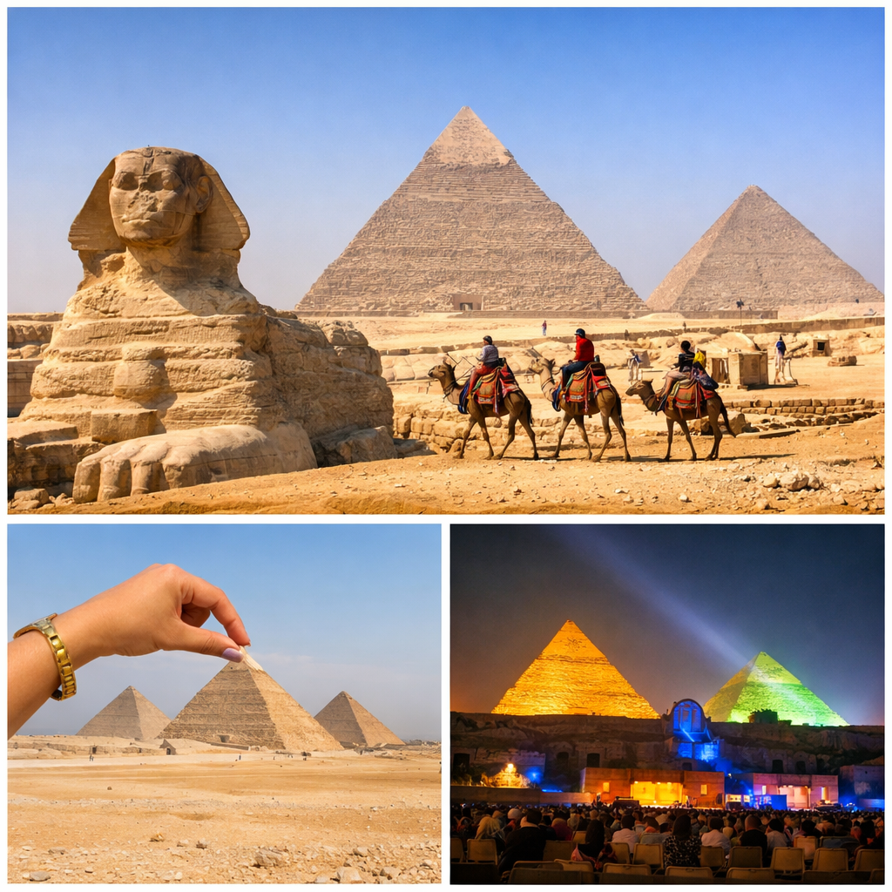
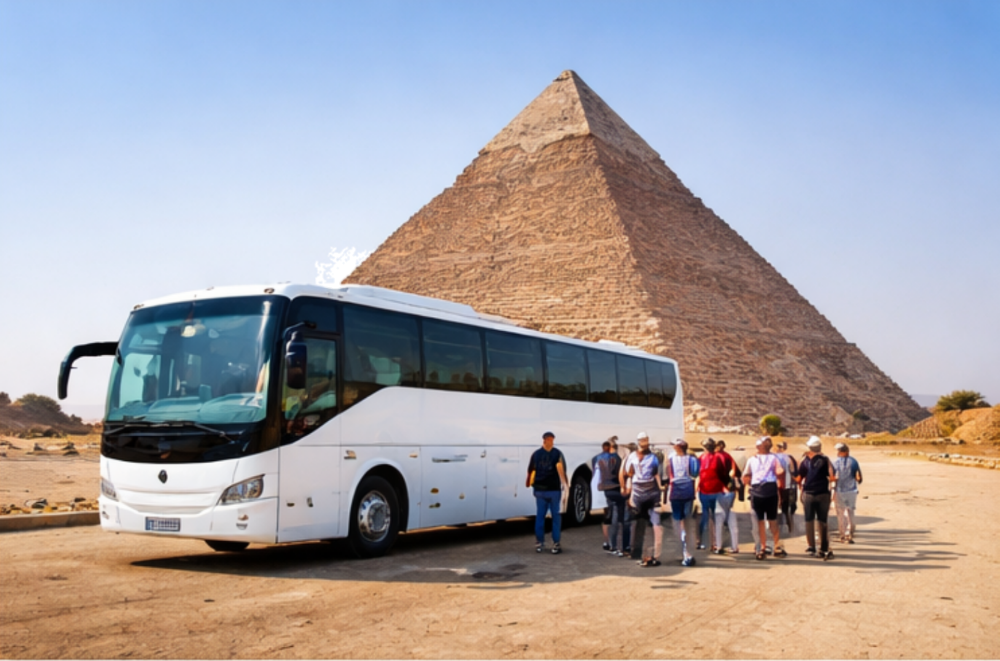

Pyramid- Mysterious World
Ancient Egyptian Civilization and Pyramids
History
The Giza Pyramids, located in Giza near the capital Cairo, are one of the Seven Wonders of the Ancient World. The Giza pyramids were built around 2500 BC and are tombs of the Fourth Dynasty of ancient Egypt. The largest is the Great Pyramid of Giza, built by Pharaoh Khufu. Its architectural techniques remain astonishing to this day, and it has stood for over 4500 years.

Attractive
🏜️ Spectacular Pyramids: One of the world's oldest large-scale architectural complexes
🗿 The Sphinx of Giza: Mysterious and awe-inspiring
🐪 Camel Riding Experience: Immersive desert atmosphere
🌅 Sunrise/Sunset Views: Absolutely magnificent
👉 Perfect for history buffs and photography enthusiasts.
Food
Must-try local specialties when visiting Egypt:
🥙 Falafel (fried chickpea cakes)
🍚 Koshari (national dish)
🍢 Kebab (grilled meat skewers)
🍞 Pi👉 Nearby restaurants offer authentic Middle Eastern cuisine.

Transportation
How to get to the Giza Pyramids from Falafel:
First, go to Cairo International Airport.
Taxi/Uber is the most convenient.
Local bus: Cheaper but more complicated.
Tour group: Most hassle-free.
It takes about 30-45 minutes from downtown Cairo.